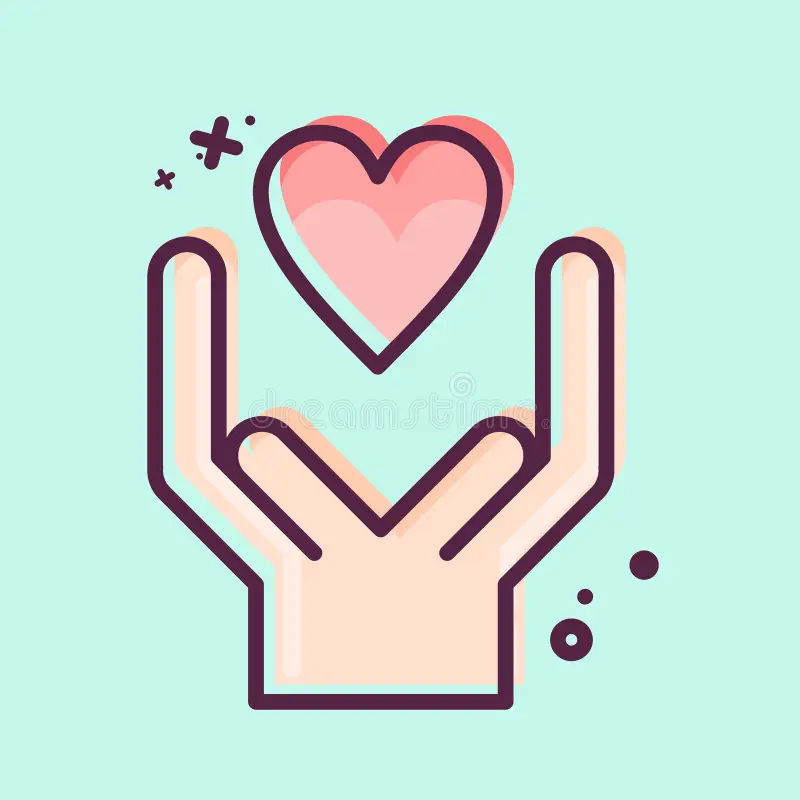
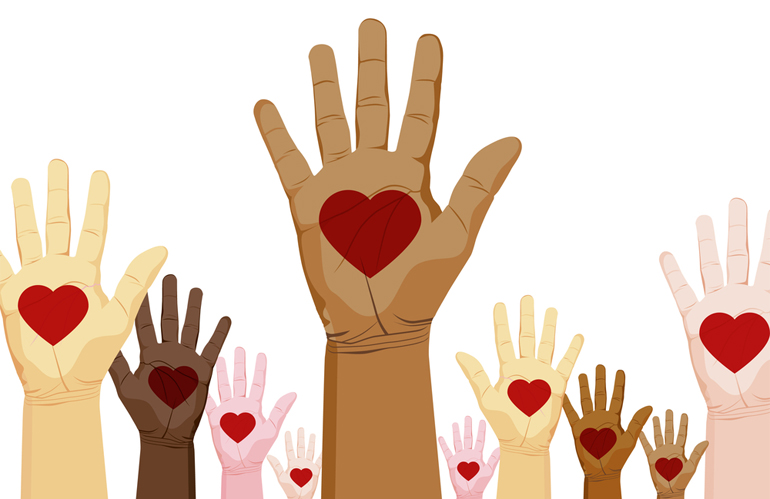

Cards
Aulas de Matemática, Biologia e mais!
+ de 200 voluntários cadastrados
Faça parte
Faça parte dos nossos Estudantes
No nosso site você pode se conectar com milhares de voluntários e estudantes!
Saiba mais!Faça parte dos nossos Voluntários
Aqui você pode transformar a vida de alguém ajudando nos estudos para o ENEM!
Saiba mais!Dúvidas
Como sou ajudado?
O que vou aprender?
Como vou ser ajudado?
Ao se cadastrar como estudante na nossa plataforma, você poderá se conectar com voluntários dispostos a te ajudar na sua preparação para o Enem de forma totalmente gratuita. A ajuda acontece de maneira flexível e personalizada:
você pode tirar dúvidas específicas sobre conteúdos como matemática, português, redação, história e outras disciplinas, conversar com voluntários por mensagens ou chamadas, e até receber materiais de apoio como resumos, dicas de organização e cronogramas de estudo. Aqui, você não estará sozinho cada voluntário está aqui para te apoiar, incentivar e ajudar a transformar sua jornada de estudos em um caminho mais leve, focado e eficiente.
O que irei aprender?
Ao se juntar à Tutoriaê, você terá acesso ao conhecimento essencial para alcançar sua tão sonhada aprovação no ENEM. Nossos voluntários estão prontos para te ajudar em todas as áreas do exame: desde a interpretação de textos e gramática em Linguagens, até cálculos, funções e lógica em Matemática. Você também aprenderá sobre o mundo que te cerca com História, Geografia, Filosofia e Sociologia, desenvolvendo senso crítico e entendimento de atualidades. Em Ciências da Natureza, vai compreender os fenômenos por trás da Química, Física e Biologia, com explicações que conectam a teoria à prática. E claro, vamos juntos construir uma Redação de excelência, com estrutura, argumentos fortes e uma proposta de intervenção que faça a diferença.
Duvidas
Como ajudo sendo voluntário?
O que ganho com isso?
Como ajudar sendo voluntário
Ser voluntário aqui é simples: você dedica um pouco do seu tempo para ajudar estudantes a se prepararem para o Enem de forma 100% gratuita.
Você pode ajudar:
- Explicando matérias (como matemática, redação, história etc.)
- Tirando dúvidas por mensagem ou chamada
- Orientando com dicas de organização e rotina saudável
O que você ganha com isso?
Ao ajudar um estudante, você também cresce. Ser voluntário aqui é uma troca de experiências e aprendizados.
Você desenvolve:
Conexão de forma agradável
Desenvolvimento colaborativo
Empatia ao próximo